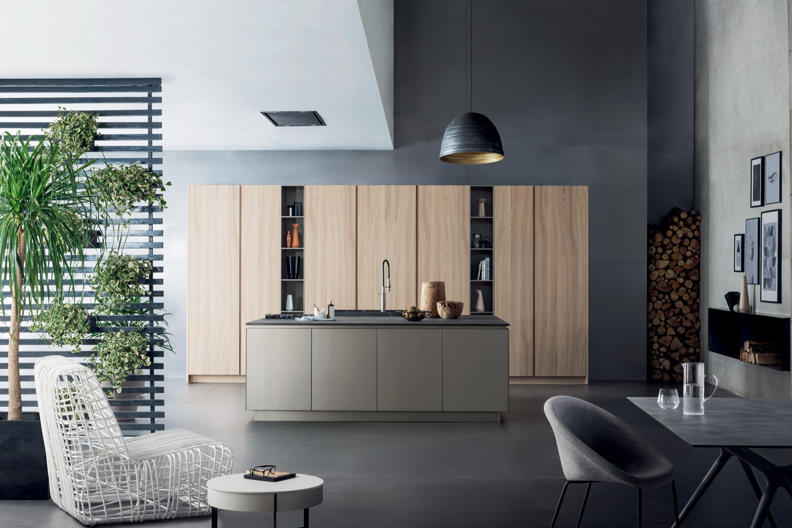
T45
Натуральные материалы, подчёркивающие мастерство
T45
Большой кухонный остров — центр домашней жизни. T45 объединяет тепло натуральных материалов с чёткостью итальянского дизайна.
Универсальная система композиций, в которой натуральные материалы — камень, массив дерева, шпон — сочетаются с лаковыми покрытиями и металлическими деталями. Название коллекции отражает толщину дверцы 45 мм, которая придаёт фасадам ощутимую основательность и скульптурную точность.
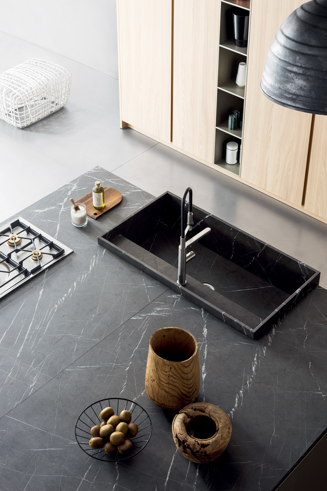
Варианты конструкций
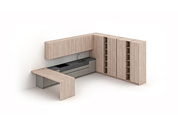
УГЛОВАЯ КОМПОЗИЦИЯ С ПОЛУОСТРОВОМ
Фасады: шпон дуба Rovere sbiancato
Основания: лак Grigio Alpaca
Столешница: Quarzo fumo
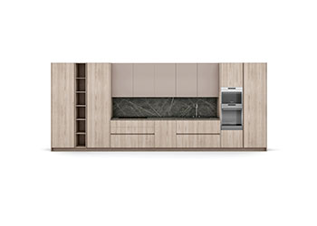
ЛИНЕЙНАЯ КОМПОЗИЦИЯ
Колонны: шпон дуба Rovere sbiancato
Полки: лак Ardenne beige
Столешница: Pietra di Corinto
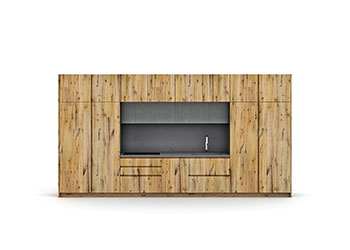
ЛИНЕЙНАЯ ИЗ ДУБА С РАЗДЕЛЬНЫМИ УЗЛАМИ
Фасады: дуб Essenza
Полки: лак серый матовый
Столешница: Quarzo fumo
Отделочные материалы
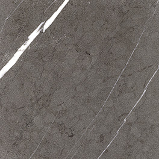
Pietra di Corinto macrata
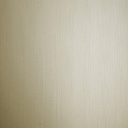
Лак Metal Champagne
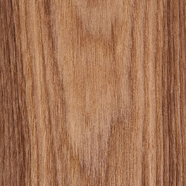
Шпон вяза Olmo bigiato
Предлагаемые отделки
- Столешница
- Pietra di Corinto macrata
- Фасады
- Лак Metal Champagne
- Колонны
- Шпон вяза Olmo bigiato

Стоимость коллекции T45 — от 2 500 000 ₽
T45 от TM Italia — дизайнерская итальянская кухня премиум-класса, построенная на фирменном скосе 45°. Этот геометрический приём превращает каждый фасад в архитектурный элемент и органично вписывает её в любой интерьер. Натуральный камень Corinto, шпон вяза и лак Metal Champagne создают сдержанную роскошь без лишнего. Конфигурация и отделка подбираются индивидуально под особенности вашего пространства.
Наш менеджер Елена поможет подобрать кухню под архитектуру вашего дома и рассчитает итоговую стоимость.
Большой остров
Центр пространства
Столешница острова толщиной 20 мм из натурального камня Corinto с интегрированной мойкой подчёркивает монолитность конструкции.
Основание из массива дерева с характерными резами под 45 градусов создаёт визуальную лёгкость, а встроенные шкафы обеспечивают функциональность.
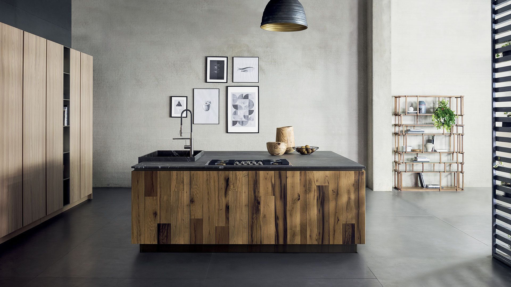

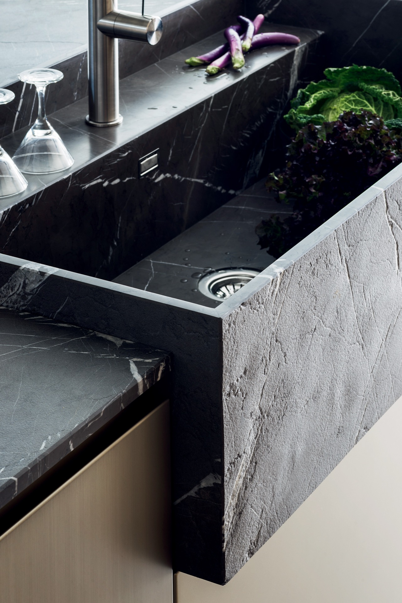
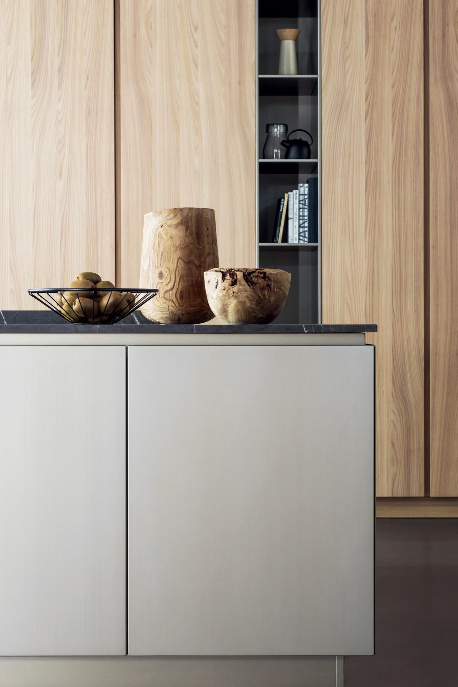
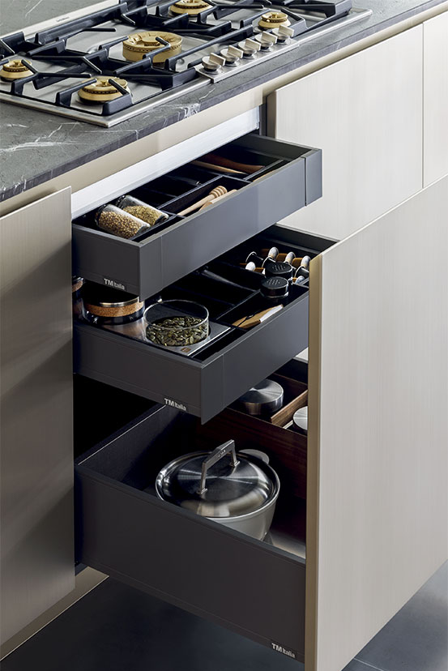
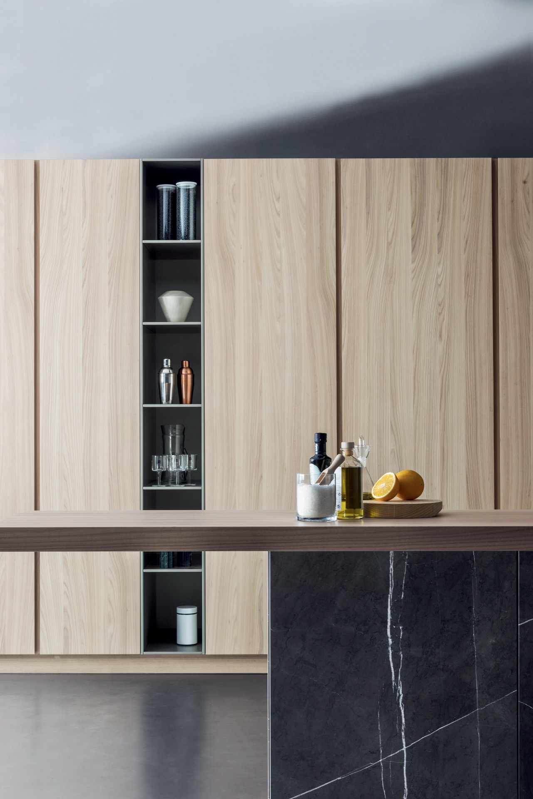
T45 Evo
Эволюция коллекции T45 — дверцы со скошенной кромкой под 45 градусов, выступающие за пределы конструкции. Этот приём усиливает ощущение объёма и подчёркивает скульптурный характер каждого элемента.
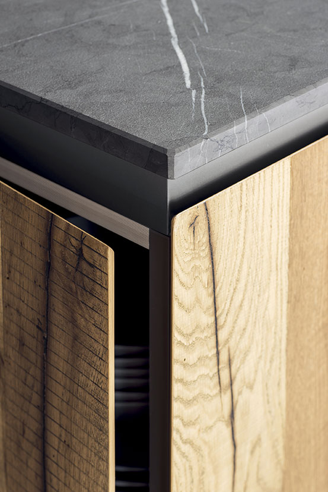
Обсудить проект
из коллекции T45
Персональная консультация по конфигурации и материалам.